조경산업기사 (2011-06-12 기출문제)
1과목: 조경계획 및 설계
1. 거실 혹은 사무실 의자, 공원 벤치 등의 배치에 있어서 파악 되어져야 하는 개념 중 제일 중요한 것은?
- 영역성 개념
- 개인적인 공간개념
- 혼잡성 개념
- 기능적 개념
(정답률: 76%)

2. 점(点, spot)에 대한 설명 중 옳지 않은 것은?
- 한 개의 점이 공간에 그 위치를 차지하면 우리의 시각은 자연히 그 점에 집중한다.
- 두 개의 점이 있을 때 한쪽점이 작을 경우에 주의력은 작은 쪽에서 큰 쪽으로 옮겨진다.
- 광장의 분수, 조각, 독립수 등은 조경공간에서 정적인 역할을 한다.
- 점이 같은 간격으로 연속적인 위치를 가지면 흔히 선으로 느껴진다.
(정답률: 94%)
3. 그림과 같은 절토면의 경사 표시가 바르게 된 것은?
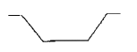
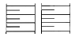
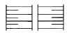
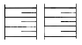
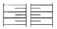
(정답률: 93%)
4. 녹지계획 수립과정은 단일형, 선택형, 연환형으로 분류할 수 있다. 그 중 연환형(連環型) 계획 수립과정의 장점이 아닌 것은?
- 어느 한 단계의 수정시 정당성 여부를 점검할 수 있다.
- 이용자가 가장 좋다고 생각되는 안(案)을 직접 선택할 수 있다.
- 모든 단계의 시간적 계열의 짝지음이 수월해진다.
- 도시계획의 다른 윤회(輪廻)와 결합시켜 전체적인 체계를 구성시킬 수 있다.
(정답률: 84%)
5. 옛날 유(囿)를 만들어 짐승을 키웠다는 내용이 실려 있는 서적은?
- 삼국사기
- 동사강목
- 삼국유사
- 대동사강
(정답률: 84%)
6. 빛의 파장이 긴 적색이나 황색은 어둡게, 빛의 파장이 짧은 녹색이나 청색은 비교적 밝게 보이는 것을 가리키는 것은?
- 색의 향상성
- 광원의 연색성
- 푸르키니에 현상
- 색의 가시도
(정답률: 83%)
7. 무굴인도의 샤-자한 시대에 조성된 작품은?
- 니샤트-바그(Nishat Bagh)
- 샤리마르-바그(Shalimar Bagh)
- 아차발-바그(Achabal Bagh)
- 체하르-바그(Tshehar Bagh)
(정답률: 82%)
8. 차량과 보행인들의 통행을 조절하거나 또는 차량과 보행공간을 분리시키기 위하여 설치하는 시설로 30~70cm 정도의 높이를 가진 기둥 모양의 가로 장치물은?
- 키오스크(Kiosk)
- 가드레일(Guard Rail)
- 볼라드(Bollard)
- 식수함(Planter Box)
(정답률: 91%)
9. 수림대 등의 보호, 식생비율의 증가, 해당지역을 대표하는 식생의 증대 등을 위하여 활용되는 제도는 무엇인가?
- 경관협정
- 녹화계약
- 녹지활용계약
- 생물다양성관리계약
(정답률: 30%)
10. 물체의 앞 또는 뒤에 화면을 놓고 시점에서 물체를 본 시선이 화면과 만나는 각 점을 연결하여 눈에 비치는 모양과 같게 물체를 그리는 것은?
- 투시도법
- 정투상도법
- 등각 투상도법
- 부등각 투상도법
(정답률: 77%)
11. 설계과정 중 시설의 배치계획 및 공사별 개략설계를 작성하여 사업실시에 관한 각종 판단에 도움을 주기 위한 작업으로서 선행된 작업 내용을 구체적으로 부지에 결합시켜 가는 단계와 관계되는 것은?
- 계획설계(schematic design)
- 실시설계(detailed design)
- 기본설계(preliminary design)
- 기본계획(master plan)
(정답률: 57%)
12. 김조순의 옥호정도(玉壺亭圖)에서 주로 살펴볼 수 있는 것은?
- 앞뜰의 대표적인 꾸밈새
- 유상곡수의 형태
- 후원의 대표적인 꾸밈새
- 별당 마당의 꾸밈새
(정답률: 57%)
13. 다음 중 관용색명과 대응하는 계통색명과 먼셀표 기법이 맞게 짝지어진 것은?
- 개나리색 - 노란 연두 - 3GY 7/10
- 창포색 - 선명한 보라 - 3P 4/11
- 장미색 - 탁한 초록 - 10GY 4/4
- 진달래색 - 밝은 초록 - 3G 4.5/7
(정답률: 76%)
14. 식물의 질감에 영향을 주는 요소로서 가장 관련이 적은 것은?(오류 신고가 접수된 문제입니다. 반드시 정답과 해설을 확인하시기 바랍니다.)
- 잎의 크기
- 수피의 색
- 가지의 크기
- 관찰 거리
(정답률: 64%)
15. 도시공원 및 녹지 등에 관한 법률 시행규칙에 근거한 도시공원 시설의 유형과 시설이 서로 맞지 않는 것은?
- 운동시설 : 자연체험장
- 휴양시설 : 민속놀이마당
- 교양시설 : 청소년수련시설(생활권 수련시설에 한한다.)
- 유희시설 : 뱃놀이터
(정답률: 79%)
16. 어떤 물체나 표면에 도달하는 광(光)의 밀도(密度)를 무엇이라 하는가?
- 휘도(brightness)
- 조도(illuminance)
- 촉광(candle-power)
- 광도(luminous intensity)
(정답률: 72%)
17. 연간 이용객 추정에서 최대일 이용자 수의 산출공식은?
- 연간 이용자수 × 회전율
- 최대시 이용자수 × 연간 이용회수
- 최대시 이용자수 × 최대일률
- 연간 이용자수 × 최대일률
(정답률: 76%)
18. 한국 전통사찰이 공간구성 기본원칙이 아닌 것은?
- 자연과의 조화
- 인간척도의 유지
- 공간간의 연계성
- 계층적 질서의 타파
(정답률: 79%)
19. 다음 중 명승문화재의 지정기준이 아닌 것은?
- 자연경관이 뛰어난 곳
- 동, 식물의 서식지
- 건물을 제외한 경승지
- 저명한 경관의 전망지점
(정답률: 74%)
20. 다음 중 주택정원에서 가장 정숙을 요구하는 공간은?
- 진입공간(approach area)
- 사적공간(private area)
- 서비스공간(service area)
- 공적공간(public area)
(정답률: 88%)
2과목: 조경식재
21. 중국, 한국(울릉도), 일본이 원산지인 수목은?
- Aesculus turbinata
- Cedrus deodara
- Juniperus chinensis
- Prunus yedoensis
(정답률: 65%)
22. 다음 중 평면화단에 속하지 않는 것은?
- 경재화단(border flower bed)
- 카펫화단(carpet flower bed)
- 리본화단(ribbon flower bed)
- 포석화단(paved flower bed)
(정답률: 70%)
23. 종합경기장에 식재계획을 할 경우 주차장에 심어야 할 가장 적합한 녹음 수종으로만 짝지어진 것은?
- 은행나무, 느티나무
- 주목, 비자나무
- 회양목, 식나무
- 팔손이나무, 녹나무
(정답률: 78%)
24. 부등변삼각형을 기본단위로 하여 그 삼각망을 순차적으로 확대하면서 다량의 수목을 배치하는 식재수법으로서 다음 중 가장 적합한 것은?
- 교호식재
- 임의식재
- 모아심기
- 무리심기
(정답률: 55%)
25. 조경설계기준상 산업단지 및 공업지역의 완충녹지 설명 중 틀린 것은?
- 주거전용지역이나 교육 및 연구시설 등 조용한 환경으로 부터 녹지설치의 원인시설이 은폐될 수 있는 형태로 한다. 이 때 수고가 4m 이상으로 성장할 수 있는 수목의 녹화면적이 50%이상이 되도록 한다.
- 녹지의 폭원은 최소 50~200m 정도를 표준으로 하되 당해 지역의 특성과 인접 토지이용과의 관계, 풍향, 기후, 사회적·자연적 조건 등을 고려하여 적절한 폭과 길이를 결정한다.
- 경관조경수를 주 수종으로 도입하여, 대기오염에 강한 낙엽수를 수림지대 주변부에 두고, 그 중심에 속성 녹화 경관수목을 배식한다.
- 완충녹지의 기능을 촉진하기 위하여 속성수와 완충기능 수종을 식물사회학적인 관계를 고려하여 군식 또는 군락 식재를 한다.
(정답률: 71%)
26. 실내식물의 환경 중 광선의 세기가 광보상점이상 광포화점이하라야 식물이 건강하게 생육 할 수 있다. 빛의 세기가 너무 약하면 나타나는 현상은?
- 잎이 황색으로 변한다.
- 잎이 마르고 희게 된다.
- 잎의 두께가 굵어진다.
- 잎의 가장자리가 마르게 된다.
(정답률: 53%)
27. 조경설계기준에서 정한 수간(樹幹)의 단위체적당 중량이 1340kg/m3 이상인 수종으로만 짝지어진 것은?
- 녹나무, 삼나무
- 굴피나무, 화백
- 굴거리나무, 칠엽수
- 감탕나무, 상수리나무
(정답률: 48%)
28. 다음 중 보기의 특징에 적합한 것은?
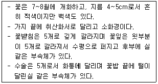
- 협죽도
- 자금우
- 불두화
- 만병초
(정답률: 60%)
29. 다음 녹도(綠道, 보행자 공간, Pedestrian space)에 대한 설명으로 옳지 않은 것은?
- 일상생활과 직접 결합된 통학, 통근, 산책, 장보기 등을 위한 도로이다.
- 보도와 자전거용 도로는 완전히 분리되도록 한다.
- 도로에서 2.5m 높이까지는 교목의 가지가 돌출하는 일이 없어야 한다.
- 일반적으로 프라이버시를 확보하기 위하여 멀리 바라보이지 않도록 하고 야간에는 국부조명이 되도록 한다.
(정답률: 78%)
30. 다음 보기에서 설명하고 있는 식물은?
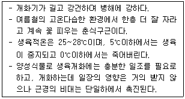
- 달리아
- 튤립
- 칸나
- 히아신스
(정답률: 77%)
31. 식재로 얻을 수 있는 기능 중 기상학적 효과는?
- 태양 복사열 조절
- 대기정화 작용
- 토양 침식조절
- 반사조절
(정답률: 77%)
32. 수목의 이식시기로 가장 적합한 것은?
- 근(根)계 활동 시작 직전
- 근(根)계 활동 시작 후
- 발아 정지기
- 새 잎이 나오는 시기
(정답률: 76%)
33. "Zelkova serrata"의 수관 기본형으로 적당한 것은?
- 원통형(圓桶形)
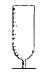
- 배형(盃形)
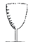
- 수지형(垂枝形)
- 구형(球形)
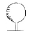
(정답률: 76%)
34. 다음 중 내음성 조경수로만 구성된 것은?
- 굴거리나무, 소나무
- 주목, 비자나무
- 편백, 조팝나무
- 측백나무, 이팝나무
(정답률: 70%)
35. 근원중기가 A, B 2개인 경우 뿌리분의 크기를 근원직경의 4~5배로 하기 위하여 분반경(盆半徑)을 구하는 식은?
- (A둘레+B둘레) × 1/2
- (A둘레+B둘레) × 1/3
- (A둘레+B둘레) × 1/4
- (A둘레+B둘레) × π/2
(정답률: 62%)
36. 다음 중 우리나라에서 내동성이 가장 강한 것은?
- 자작나무
- 녹나무
- 비자나무
- 감탕나무
(정답률: 76%)
37. 인공지반 위에 사용하는 경량토의 종류 중 진주암을 고온으로 소성한 것으로 염기성 치환용량이 작아 보비성(保肥性)이 없는 인공 토양은?
- 버미큘라이트
- 펄라이트
- 피트
- 화산회토
(정답률: 74%)
38. 다음 중 방풍용 수목의 설명으로 맞는 것은?
- 수목의 지하고율이 작을수록 바람에 대한 저항은 증대된다.
- 천근성으로서 지엽이 치밀하지 않아야 한다.
- 수목은 잎이 두껍고 함수량이 많은 넓은 잎을 가진 상록수가 적합하다.
- 후박나무, 사철나무, 동백나무, 삼나무 등은 모두 방풍용 수목으로 적당하다.
(정답률: 62%)
39. 산성 토양에 가장 잘 견디는 것은?
- Buxus koreaana Nakai ex Chung
- Pinus koreaiensis Sieb. & Zucc
- Acer palmatum Thunb. ex Murray
- Fraxinus rhynchophylla Hance
(정답률: 55%)
40. 식재 공사시 뿌리돌림을 할 경우 분의 크기는 근원직경의 몇 배로 작업해야 하는 것이 가장 이상적인가?
- 2배
- 4배
- 6배
- 10배
(정답률: 84%)
3과목: 조경시공
41. 토양침식에 대한 설명으로 옳지 않은 것은?
- 토양의 침식량은 유거수량이 많을수록 적어진다.
- 토양유실량은 강우량보다 최대강우량강도와 관계가 있다.
- 경사도가 크면 유속이 빨라져 무거운 입자도 침식된다.
- 작물의 생장은 투수성을 좋게 하여 토양 유실량을 감소시킨다.
(정답률: 88%)
42. 생콘크리트의 측압에 대한 영향이 가장 적은 것은?
- 콘크리트의 발열
- 온도 및 대기의 습도
- 생콘크리트의 다지기 방법
- 콘크리트의 부어넣기 속도
(정답률: 60%)
43. 한중콘크리트로서 시공하여야 하는 기준이 되는 기상조건에 대한 설명으로 옳은 것은?
- 하루의 평균기온이 0℃ 이하가 되는 기상조건
- 하루의 평균기온이 4℃ 이하가 되는 기상조건
- 일주일의 평균기온이 0℃ 이하가 되는 기상조건
- 일주일의 평균기온이 4℃ 이하가 되는 기상조건
(정답률: 80%)
44. 덤프트럭에 흙을 운반할 때 적재시간 10분, 왕복 운반 시간 30분, 적하시간 1.5분, 대기시간 1.0분, 적재함 덮개 설치 및 해체시간 4.5분이라 할 때 1회 싸이클 시간(Cm)은?
- 47분
- 51.5분
- 63분
- 74.5분
(정답률: 60%)
45. 공사시공방법에 있어서 전문 공사별, 공정별, 공구별로 도급을 주는 방법은?
- 분할도급
- 공동도급
- 일식도급
- 직영도급
(정답률: 85%)
46. 다음 중 건설기계와 해당 건설기계의 주된 작업종류의 연결이 옳지 않은 것은?
- 백호 - 정지
- 크램쉘 - 굴착
- 파워쇼벨 - 굴착
- 그레이더 - 정지
(정답률: 81%)
47. 플라스틱의 특성에 대한 설명 중 옳지 않은 것은?
- 내식성이 우수하다.
- 약알칼리에 약하다.
- 일반적으로 비흡수성이다.
- 화학약품에 대한 저항성은 열경화성 수지와 열가소성 수지가 다른 특성을 갖고 있다.
(정답률: 72%)
48. 어느 옹벽의 전도력은 2000kg·m 이고, 전도저항력은 5000kg·m이다. 이때 전도의 안전계수는 얼마인가?
- 0.4
- 1.5
- 2.0
- 2.5
(정답률: 59%)
49. 석재(石材)의 표면가공 방법이 아닌 것은?
- 할석
- 화염처리
- 손다듬기
- 갈기 및 광내기
(정답률: 69%)
50. 살수기를 선정할 때 고려해야 하는 살수기의 제원 설명 중 ( )안에 알맞은 내용은?
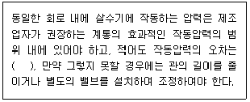
- 동일 지관이므로 같게 한다.
- 각 살수기 작동압력의 3% 이내 이어야 한다.
- 각 살수기 작동압력의 10% 이내 이어야 한다.
- 고려 없이 면적에 따라 한 지관에 얼마든지 설치한다.
(정답률: 77%)
51. 콘크리트용 골재로서 요구되는 성질에 대한 설명중 옳지 않은 것은?
- 골재의 입형은 가능한 한 편평, 세장하지 않을 것
- 골재의 강도는 경화시멘트페이스트의 강도를 초과하지 않을 것
- 골재의 입도는 조립에서 세립까지 연속적으로 균등히 혼합되어 있을 것
- 골재는 시멘트페이스트와의 부착이 강한 표면구조를 가져야 할 것
(정답률: 62%)
52. 아스팔트의 물리적 성질에 대한 설명으로 틀린 것은?
- 아스팔트의 열팽창계수는 상온 200℃까지 범위에서 대개 (6.0~6.2)× 10-4/℃ 정도이다.
- 아스팔트의 비중은 일반적으로 약 1.0~1.1 정도이다.
- 아스팔트의 인화점은 원유의 종류, 제조방법, 침입도에 의하여 다르지만 대체로 250~320℃의 범위에 있다.
- 아스팔트의 침입도는 온도 상승에 따라 감소한다.
(정답률: 47%)
53. 다음 설명에 적합한 시멘트의 종류는?
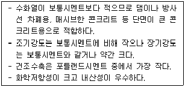
- 백색포틀랜드시멘트
- 조강포틀랜드시멘트
- 중용열포틀랜드시멘트
- 실리카시멘트
(정답률: 82%)
54. 다음의 혼화재료 중 콘크리트의 워커빌리티를 개선하는 효과가 없는 것은?
- AE제
- 감수제
- 포졸란
- 발포제
(정답률: 59%)
55. 다음 공원조명에 관한 설명 중 옳지 않은 것은?
- 그림자 조명은 실루엣조명과 대조적인 조명방식으로 물체의 측면이나 하향으로 빛을 비춤으로써 이루어진다.
- 수목이나 시설물을 돋보이도록 하려면 나트륨등을 쓰는 것이 좋다.
- 공원조명은 보안성, 효율성, 쾌적성 등을 고려해서 설치한다.
- 조명용 각종 배선은 지하매설 방식이 바람직하다.
(정답률: 75%)
56. 도로의 수평노선에서 곡선반경이 20m이고, 접선장의 교각이 30도일 때 곡선장은 약 얼마인가?
- 1.67m
- 5.24m
- 10.47m
- 12.14m
(정답률: 59%)
57. 다음 지형도와 같은 지형을 만들기 위하여 성토량을 계산하려고 한다. 각 절단면의 단면적은 다음과 같고 절단면과 절단면의 간격을 5m라고 할 때 성토량은 약 얼마인가? (단, A-A' 단면적 : 5m2, B-B' 단면적 : 4m2, C-C' 단면적 : 3m2, D-D' 단면적 : 4m2, E-E' 단면적 : 5m2, F-F' 단면적 : 6m2)
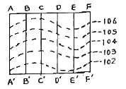
- 21.5m3
- 43m3
- 107.5m3
- 215m3
(정답률: 60%)
58. 암석을 구성하고 있는 조암광물의 집합상태에 따라 생기는 눈 모양을 무엇이라고 하는가?
- 석목
- 석리
- 층리
- 절리
(정답률: 69%)
59. 지상 고도 2,000m의 비행기 위에서 화면 거리 152.7mm의 사진기로 촬영한 수직 공중 사진상에서 길이 50m의 교량은 몇 mm로 촬영되는가?
- 1.2mm
- 2.5mm
- 3.8mm
- 4.2mm
(정답률: 61%)
60. 우수유출량(Q)의 계산식은 1/360 C.I.A 이다. 여기서 "I" 는 무엇을 의미하는가?
- 유출계수
- 배수면적
- 강우강도
- 강우용량
(정답률: 71%)
4과목: 조경관리
61. 잡초의 유용성에 대한 설명으로 틀린 것은?
- 잡초 중에는 논둑 및 경사지 등에서 지면을 덮어 토양 유실을 막아 준다.
- 작물과 같이 자랄 경우 빈 공간을 채워 작물의 도복을 막아준다.
- 근연 관계에 있는 식물에 대한 유전자은행으로서의 역할을 할 수 있다.
- 유기물이나 중금속 등으로 오염된 물이나 토양을 정화하는 기능을 가진 종들이 있다.
(정답률: 66%)
62. 점토광물이 형태상의 변화없이 내·외부의 이온이 치환되어 점토광물 표면에 음전하를 갖게 하는 현상을 무엇이라 하는가?
- 동형치환
- pH 의존전하
- 변두리 전하
- 잠시적 전하
(정답률: 69%)
63. 토양입자의 침강속도를 측정하여 토양의 입경을 구분할 때 이용되는 Stokes식 내의 독립변수 중 침강 속도에 영향을 주는 인자로 고려되지 않는 것은?
- 물의 점성계수
- 물의 밀도
- 입자의 반경
- 입자의 형태
(정답률: 50%)
64. 코호의 4원칙(Koch's postulates)에 합당하지 않은 것은?
- 병든 생물체에 병원체로 의심되는 특정 미생물이 존재 해야 한다.
- 미생물이 분리되어 기주식물이나 인공배지에서 순수 배양되어야 한다.
- 순수배양한 미생물을 동일 기주에 접종하였을 때 동일한 병이 발생되어야 한다.
- 발병한 부위에서 접종한 미생물과 동일한 성질을 가진 미생물이 재분리 배양되어야 한다.
(정답률: 52%)
65. 파이토플라스마(phytoplasma)가 수목으로 전반되는 주요한 수단은?
- 바람
- 물
- 농기계
- 매개충
(정답률: 74%)
66. 초화류의 재배에 알맞은 토양조건이 아닌 것은?
- 배수성
- 통기성
- 보비성
- 점토성
(정답률: 79%)
67. 다음 중 조경공간의 이용관리에 해당되는 것은?
- 식재수목에 대한 관리
- 기반시설물에 대한 관리
- 관리예산과 조직에 대한 관리
- 행사에 대한 홍보 및 프로그램 관리
(정답률: 60%)
68. 피레트린(Pyrethrin) 살충제는 충제의 어느 부분에 작용하여 효과를 내는가?
- 근육독
- 피부독
- 신경독
- 원형질독
(정답률: 71%)
69. 어떤 농약을 500배로 희석하여 10아르(a)당 100리터씩 3헥타아르(ha)에 처리하고자 할 때 필요한 농약의 양은 얼마인가?
- 1.5kg
- 6kg
- 15kg
- 30kg
(정답률: 43%)
70. 조경수 병징(symptom)에 해당하는 것은?
- 잎의 변색
- 균사체
- 포자
- 버섯
(정답률: 69%)
71. 다음 중 솔나방(송충이)에 대한 설명으로 틀린 것은?
- 번데기는 방추형이고 갈색이며 고치는 긴 타원형이고 황갈색이며 표면에 유충의 센털이 군데군데 박혀 있다.
- 일년중에서 6~7월에 주로 소나무 잎에 붙어 있는 고치속의 번데기를 집게로 따서 죽이거나 소각한다.
- 알에서부터 성충이 되기까지는 자연폐사율이 낮다.
- 나무껍질이나 지피물 사이에서 5령충으로 월동한다.
(정답률: 63%)
72. 다음 광원의 종류 중 가장 평균 수명이 긴 것은?
- 백열등
- 형광등
- 수은등
- 할로겐등
(정답률: 89%)
73. 잡초 종자가 발아되기 전 토양에 살포하면 발아할 때 뿌리에서 흡수되어 잡초를 없앨 수 있는 것은?
- 패러쾃디클로라이드액제
- 염소산염제
- 시마진수화제
- 나드분제
(정답률: 72%)
74. 농약의 구비조건으로 틀린 것은?
- 다른 약재와 혼용이 어려워야 한다.
- 적은 양으로도 약효가 확실하여야 한다.
- 인축에 대하여 피해를 주지 않아야 한다.
- 사용 작물에 대하여 약해를 일으키지 않아야 한다.
(정답률: 86%)
75. 잔디관리 중 통기갱신용 작업에 해당되지 않는 것은?
- 코링(coring)
- 롤링(rolling)
- 슬라이싱(slicing)
- 스파이킹(spiking)
(정답률: 80%)
76. 국립공원의 관리 중 순환개방에 의한 휴식기간 확보를 위한 관리방법은 무엇을 말하는가?
- 이용객의 수요가 충당될 수 있는 충분한 공간이 개발, 확보되어 교대로 폐쇄와 개방이 이루어지면서 관리가 이루어지는 방법
- 계속 개방되어 이용객이 충분한 공간을 이용하면서 관리하는 방법
- 일정 부분을 개방하여 관리하는 방법
- 자연적으로 회복 가능하도록 개방하는 관리방법
(정답률: 68%)
77. 다음 전지 및 전정 할 때 일반적으로 잘라야 하는 가지로 적합하지 않은 것은?
- 줄기의 중간부분에 돋아난 가지
- 개화 · 결실 가지
- 안으로 향한 가지
- 아래를 향한 가지
(정답률: 79%)
78. 다음 중 생리적 반응상 산성 비료에 해당되는 것은?
- 황산칼륨
- 석회질소
- 용성인비
- 중과린산석회
(정답률: 49%)
79. 도로의 포장상태 유지를 위해 고려해야 할 사항이 아닌 것은?
- 도로포장에 설치된 배수시설을 점검한다.
- 지하 매설물의 파손을 점검한다.
- 포장면의 수평면을 확인한다.
- 도로면의 질감 변화를 살핀다.
(정답률: 67%)
80. 콘크리트의 균열을 줄이기 위한 종합적인 대책으로 적합하지 않은 것은?
- 수화열이 낮은 시멘트를 선택할 것
- 양생방법에 주의할 것
- 1회의 타설 높이를 줄일 것
- 단위 시멘트량을 많게 할 것
(정답률: 74%)